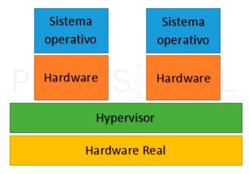
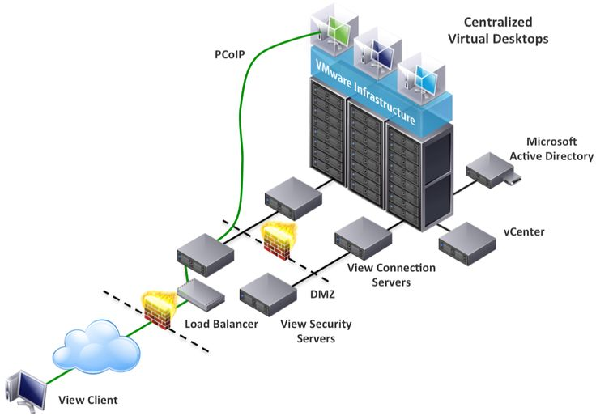
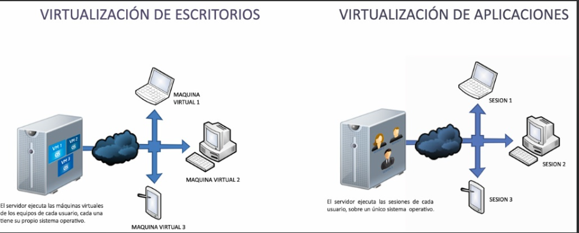
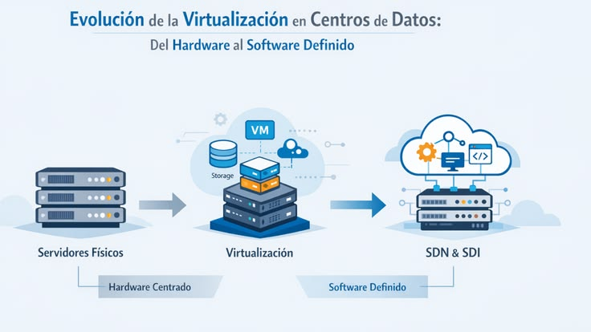

Concepto
¿Qué es la virtualización?
La virtualización es una tecnología que permite crear una versión virtual (basada en software) de un recurso tecnológico físico. Esto abarca desde sistemas operativos, servidores y dispositivos de almacenamiento, hasta recursos de red. Su objetivo principal es abstraer el software del hardware subyacente, permitiendo que un único recurso físico físico actúe como si fueran múltiples recursos independientes.
¿Cómo funciona?
El núcleo de la virtualización se basa en dos componentes fundamentales:
Las Máquinas Virtuales (VM): Son entornos informáticos aislados que funcionan como un sistema completo,
con su propia CPU virtual, memoria, almacenamiento y sistema operativo (por ejemplo, ejecutar Windows o
Linux dentro de una máquina física diferente).
El Hipervisor (o Monitor de Máquina Virtual): Es una capa de software especializado que se sitúa entre
el hardware físico y las máquinas virtuales. El hipervisor se encarga de asignar, gestionar y distribuir dinámicamente
los recursos de la máquina física (la "máquina host") a cada una de las máquinas virtuales independientes (las "máquinas
guest").

Ventajas de la virtualización
La adopción de entornos virtuales ofrece importantes beneficios estratégicos y operativos para las infraestructuras de TI:
Eficiencia y optimización de recursos: Permite aprovechar al máximo la capacidad informática del hardware existente, evitando
que los servidores físicos se queden infrautilizados.
Ahorro de costos: Al consolidar múltiples servidores virtuales en menos equipos físicos, se reduce drásticamente el gasto en
hardware, espacio en centros de datos, electricidad y sistemas de refrigeración.
Gestión de TI simplificada y automatizada: La administración de entornos mediante software permite desplegar, clonar o configurar nuevas máquinas
en cuestión de minutos usando plantillas, minimizando los errores manuales.
Recuperación ante desastres más rápida: Al estar definidas por software, las máquinas virtuales pueden respaldarse por completo de forma independiente.
En caso de fallas o ciberataques, la restauración o migración de servicios toma minutos en lugar de días, garantizando la continuidad del negocio.
Aislamiento y seguridad mejorados: Cada máquina virtual opera en su propio entorno aislado. Si una de ellas se ve comprometida por software malicioso
o sufre un fallo crítico, el problema no se propaga a las demás máquinas que comparten el mismo hardware físico.

¿Cómo se realiza?
Para entender cómo se realiza la virtualización en la práctica, debemos dividir el proceso en dos partes: la arquitectura técnica (cómo interactúa el software con los componentes físicos) y el flujo de implementación (los pasos que sigues para crear un entorno virtual).
La Arquitectura: ¿Cómo actúa el software sobre el hardware?
La magia detrás de la virtualización ocurre gracias al Hipervisor (o VMM). Este software se encarga de interceptar las peticiones que los sistemas
operativos invitados (Guest OS) hacen al procesador, la memoria o el disco, y las traduce para que el hardware real (Hardware) las ejecute de forma
segura y aislada. Dependiendo de cómo se instale este componente, existen dos formas de realizarla:
Tipo 1 o "Bare-Metal" (Nativo): El hipervisor se instala directamente sobre el hardware físico, actuando prácticamente como el
sistema operativo principal. Es la forma más eficiente y la que se usa en servidores profesionales y centros de datos.
Tipo 2 o "Hosted" (Alojado): El hipervisor corre como una aplicación común y corriente dentro de un sistema operativo ya existente
(Host OS como Windows, Linux o macOS). Es ideal para entornos de desarrollo, pruebas o aprendizaje personal.
El Proceso: Pasos para implementar una Máquina Virtual
1.Habilitar la virtualización en el hardware (BIOS/UEFI): Paso previo obligatorio.Los procesadores modernos cuentan con
tecnologías específicas para acelerar la virtualización (como Intel VT-x o AMD-V). Antes de empezar, debes entrar a la BIOS/UEFI de tu
computadora al encenderla y asegurarte de que esta opción esté en Enabled (Activada). Sin esto, el rendimiento será extremadamente pobre
o el hipervisor dará un error crítico.
2.Instalar el Hipervisor:
Preparación del entorno. Descargas e instalas el software de virtualización en tu equipo.
Si es para pruebas o estudios, programas gratuitos como VirtualBox son una excelente opción de inicio.
3.Crear y configurar la Máquina Virtual (VM):
Asignación de recursos. Abres el hipervisor y creas una nueva "máquina". El asistente te pedirá definir el perfil de hardware virtual.
Aquí asignas recursos reales de tu máquina física a la virtual: cuántos núcleos de CPU compartirá, cuánta memoria RAM (por ejemplo, 4 GB)
y el tamaño de un archivo especial en tu disco duro que simulará ser un "disco virtual" (Virtual Disk).
4.Instalar el Sistema Operativo Invitado (Guest OS):
Puesta en marcha. Una vez creada la estructura de la VM, montas una imagen de disco (un archivo .iso) del sistema operativo que deseas
instalar (un instalador de Windows, Ubuntu Linux, etc.). Enciendes la máquina virtual y el hipervisor simulará el arranque de una computadora
real, permitiéndote instalar el sistema operativo dentro del disco virtualizado de forma totalmente aislada.

Una regla de oro en la virtualización: No puedes crear recursos de la nada. Si tu servidor físico tiene 32 GB de RAM, la suma de la memoria asignada a tus máquinas virtuales activas nunca debería exceder de forma drástica esa capacidad real, ya que el hipervisor se quedaría sin recursos para gestionar la infraestructura.
¿Dónde se aplica?
La virtualización es una tecnología que abstrae el software del hardware físico mediante un programa llamado hipervisor, permitiendo crear múltiples entornos virtuales independientes (como servidores o sistemas operativos) dentro de una sola máquina real. En la práctica, se aplica masivamente en centros de datos y computación en la nube para reducir costos energéticos y de hardware, en el desarrollo de software y ciberseguridad para crear entornos de prueba y análisis aislados y seguros, y en el ámbito educativo o empresarial para ejecutar programas antiguos y simular redes complejas de forma eficiente sin arriesgar los sistemas principales.

Reflexión Personal
La virtualización vino a ser una solución a uno de los problemas más frecuentes en las empresas, la falta de espacio para expandirse, al virtualizar máquinas se puede ahorrar espacio y también es una acción con muchas ventajas si se saben aprovechar.
Elegí este tema porque me parece interesante el como la tecnología avanzó al punto de que se pueden tener más de una computadora sin la necesidad de comprar otro equipo físico. También lo elegi porque mi tío suele trabajar con máquinas virtualizadas y me gusto la idea de poder aprender a hacerlo yo.